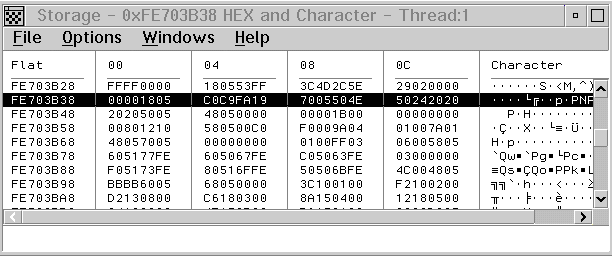

The Storage window shows the storage contents and the address of the storage. 
Multiple storage windows can display the same storage. When you run a program or update displayed data, the Storage window is updated to reflect the change.
To update the storage contents and all affected windows, double-click in the multiple-line entry field that displays. Type over the contents of the field.
To specify a new address location, type over the address field in the Storage window. The window scrolls to the appropriate storage location.
To display the Storage window, select Storage from the Monitors menu or select the Storage button from the tool buttons.